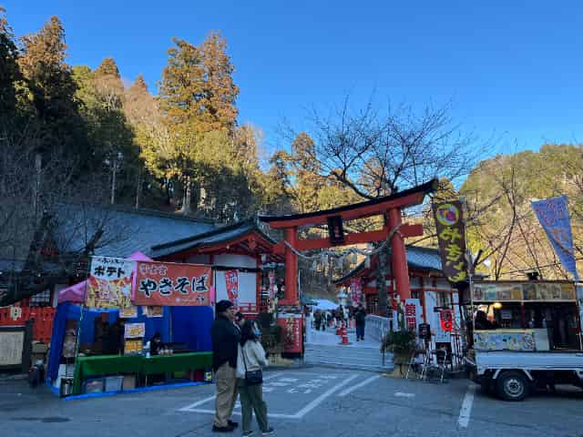
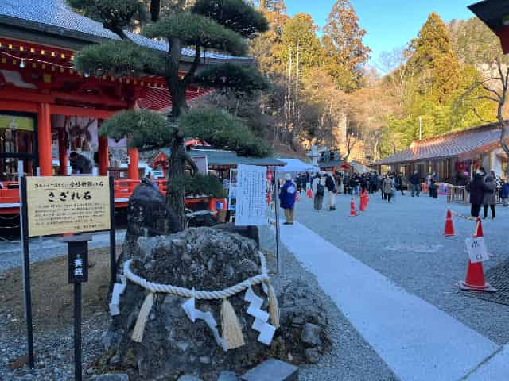
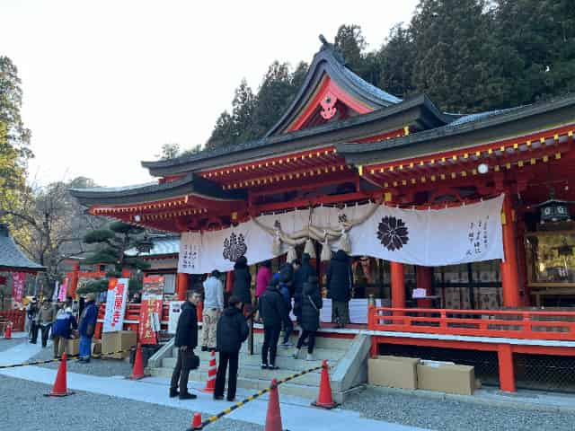
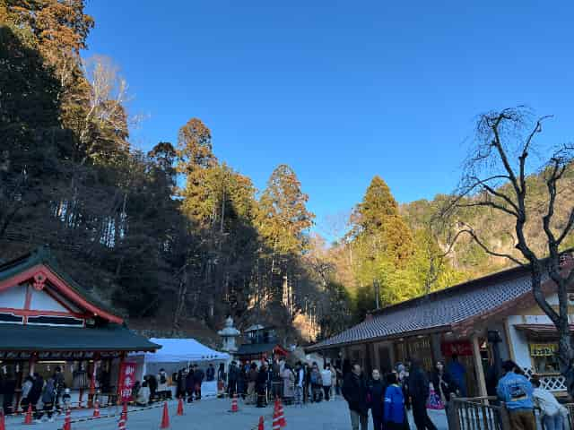
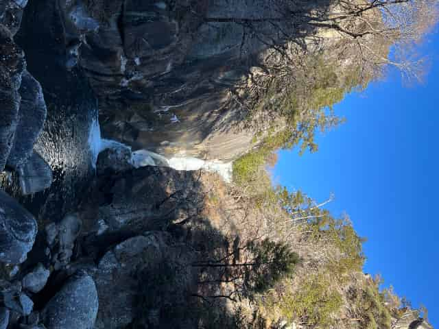
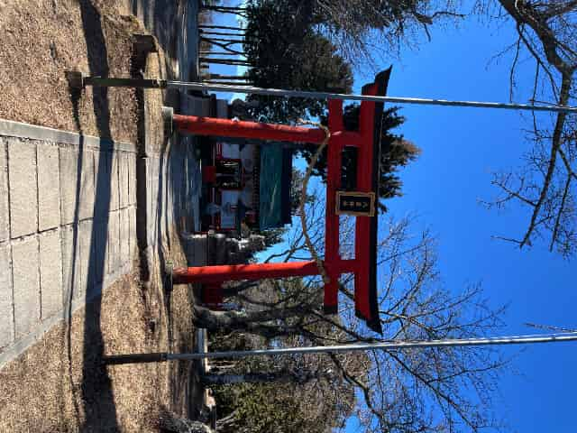
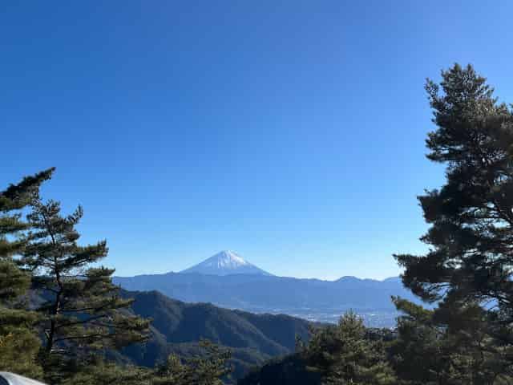
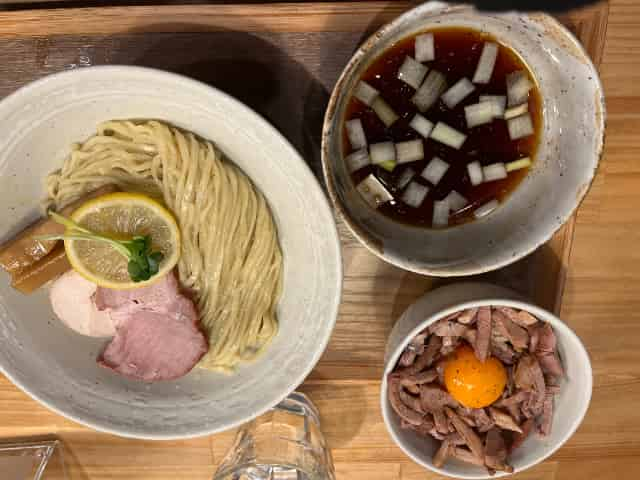
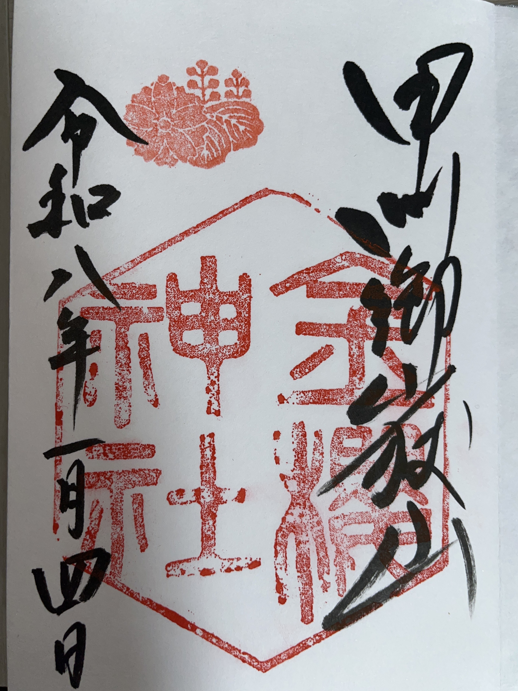

【2026山梨初詣】
金櫻神社の御朱印帳と冬の昇仙峡。1月4日の混雑状況レポート
☆金櫻神社☆
今回の目的地は、水晶発祥の地と言われる金櫻神社です。4日なら空いているだろうと考えていたのですが、現地に着いてみると予想以上の賑わいでした。
神社に向かう道では、道路の一部が臨時駐車場になっていて、警備員さんが車の誘導をしていました。山奥にある神社ですが、止まっている車は50台を超えていて、参拝客の多さがわかります。
境内も人でいっぱいで、活気がありました。標高が高いので空気はかなり冷たかったですが、大きなストーブが置かれていたので、そこで暖まっている人も多かったです。ちょうど御朱印帳が最後のページだったので、ここで新しいものを購入しました。有名な場所で新しい一冊を使い始めることができ、良い新年のスタートになりました。
御朱印を実際にいただいた際思ったことがあり、こちらではハンコとして大きな水晶を使っておりとてもおしゃれだなと。昇仙峡では国内でも屈指の水晶が強い地域なのもありとても印象に残りました。
★写真一覧★




アクセス情報
- 所在地：甲府市御岳町2347
- 駐車場：神社横および周辺道路（お正月期間は誘導あり）
- アクセス：韮崎ICから約30分
- 滞在時間：約35分
- 御朱印,御朱印帳：あり。下の方に写真があります。
★後日談★
友人を連れ山梨観光の一環で1月12日に再度訪れたのですが2時過ぎ程度で車が25～30台程度止まっておりとても驚きました。行く際は三が日が終わったからと油断せず早めの時間に訪れることをおすすめしたいです。
☆昇仙峡と八雲神社☆
参拝の後は、昇仙峡（しょうせんきょう）を散策しました。今回はロープウェイに乗って山頂まで上がってみたのですが、そこにある八雲神社にもお参りすることができました。
山頂の撮影スポットからは富士山がとても綺麗に見えて、冬の澄んだ空気のおかげで最高の眺めでした。下に戻ってからは仙娥滝（せんがたき）へ。紅葉シーズンとは違って静かでしたが、冷え込みで滝の周りが少し凍っているような、冬にしか見られない景色を楽しむことができました。
その後付近を散策していた際にワインショップが目に入り入店をしました。その際ブルーベリーのワインというものが置いてあり聞いてみたところネット販売もしくはその店舗でしか卸してない物らしく興味本位で購入！試飲をすることが出来るらしいが本日は車で訪れているため断念…その代わりぶどうジュースを試飲させていただきました！やはりワインを作っているところのものだけありとても芳醇で濃厚、他のぶどうジュースとは比べ物にならない甘さでおいしかったです。
ブルーベリーのワインを後日飲んでみて香りがぶどうに比べとても甘いがワインの香り、味に関してはワインの味ではあるのだが初めて飲む不思議な味で面白いかつおいしくワインが苦手という方でも飲みやすいのではないかと感じました。
ワインが気になる方はこちらをクリックしてください。アフィリエイトではなく純粋に山梨の物販の布教になります笑
★写真一覧★



アクセス情報
- 所在地：甲府市猪狩町441
- 駐車場：付近に複数あり。下から登っていく場合と上から下る場合で場所が全く違う為要検索推奨
- アクセス：韮崎ICから約30分
- 滞在時間：約1時間30分
☆つけ麺：MENYA OKIBI☆
最後に、甲府市内のウェルネスゾーンにあるMENYA OKIBIでラーメンを食べて帰りました。神社巡りの後のラーメンは個人的な定番です。
いただいたのは昆布水つけ麺のしょうゆ！最近、脂っこいチャーシューが少し重く感じるようになってきたのですが、ここのつけ麺はあっさりしていて、出汁の旨味がしっかりと感じられました。塩も提供されているのですが動いたこともあり塩よりほんの少し濃い醤油が恋しくなりました笑
お正月期間で麺の大盛は選べませんでしたが、一緒に頼んだチャーシュー丼も美味しかったです。味が上品で重すぎず、冷えた体にはちょうどいい贅沢でした。
★写真と場所★

☆御朱印の記録☆


☆まとめ☆
1月4日の金櫻神社は思っていたより混んでいましたが、お正月らしい活気があって良かったです。冬の昇仙峡も静かで、この時期にしか見られない氷の景色や富士山も楽しめました。新しい御朱印帳も手に入ったので、今年もマイペースに色々な神社を巡っていこうと思います。
★後書き★
写真のレイアウト、特に御朱印の配置をどうすれば綺麗に見えるかいつも迷います。
ブログを書きながら、しっくりくる形をいろいろ試していこうと思います。